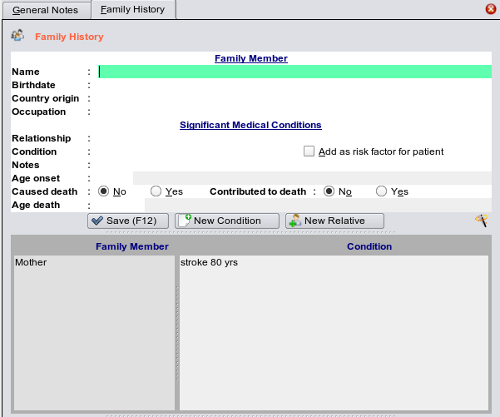

Family History
The family history section is either selected from the toolbar (if you have configured the toolbar to contain that button) or from the
drop down list on the toolbar containing the less frequently used sections of the program.

You can keep extensive information on the relative should you wish, or a minimal dataset.
Underneath the editing area is the list of family members and their conditions.